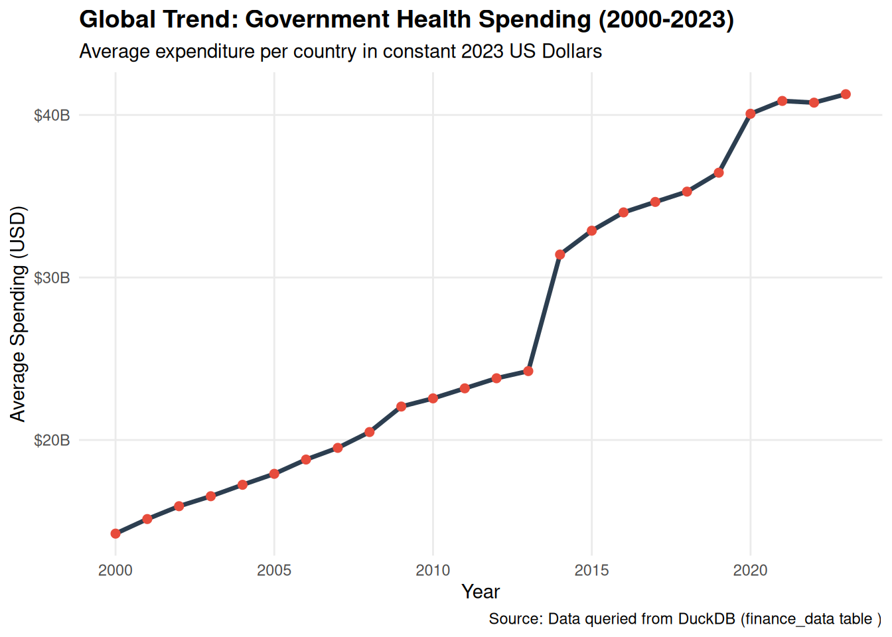
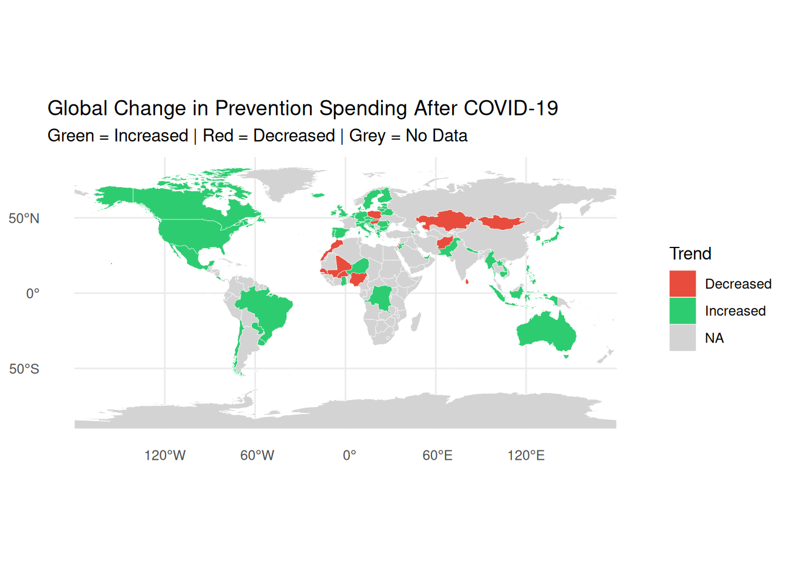

title: “Comparative Analysis of Global Health Financing and Spending Over Time” format: html author: “Group Members: Sabin Ku Shah & Nadika Sharma” —
—————————————————————————
Accessing data
—————————————————————————
Designing the database
Relational Schema:
country
---------------------------------
iso3_code (PRIMARY KEY)
country_name
|
|
-----------------------------------
| | |
| | |
health_fact finance_fact spending_fact
iso3_code(FK) iso3_code(FK) iso3_code(FK)
year year year
indicator_code indicator_code indicator_code
expenditure_type financing_scheme spending_purpose
value value value
unit unit unit
USE main;DROPTABLEIFEXISTS health_data;DROPTABLEIFEXISTS finance_data;DROPTABLEIFEXISTS spending_data;DROPTABLEIFEXISTS finance_fact;DROPTABLEIFEXISTS health_fact;DROPTABLEIFEXISTS spending_fact;DROPTABLEIFEXISTS country;
Code
-- --------------------------------------------------------------------------- Create Health Data Table-- -------------------------------------------------------------------------CREATETABLE health_data ( country_name VARCHAR, iso3_code VARCHAR,yearINTEGER, indicator_code VARCHAR, expenditure_type VARCHAR,valueDOUBLE, unit VARCHAR);
Code
-- --------------------------------------------------------------------------- Create Finance Data Table-- -------------------------------------------------------------------------CREATETABLE finance_data ( country_name VARCHAR, iso3_code VARCHAR,yearINTEGER, indicator_code VARCHAR, financing_scheme VARCHAR,valueDOUBLE, unit VARCHAR);
Code
-- --------------------------------------------------------------------------- Create Spending Data Table-- -------------------------------------------------------------------------CREATETABLE spending_data ( country_name VARCHAR, iso3_code VARCHAR,yearINTEGER, indicator_code VARCHAR, spending_purpose VARCHAR,valueDOUBLE, unit VARCHAR);
Code
-- --------------------------------------------------------------------------- Import CSV Data into Tables-- -------------------------------------------------------------------------COPY health_dataFROM'health_spending.csv'( FORMAT CSV,HEADERTRUE, DELIMITER ',', QUOTE '"');
Code
COPY finance_dataFROM'financing_schemes.csv'( FORMAT CSV,HEADERTRUE, DELIMITER ',', QUOTE '"');
Code
COPY spending_dataFROM'spending_purpose.csv'( FORMAT CSV,HEADERTRUE, DELIMITER ',', QUOTE '"');
Code
-- --------------------------------------------------------------------------- DATABASE VERIFICATION-- Confirm tables were created successfully-- -------------------------------------------------------------------------SHOW TABLES;
3 records
name
finance_data
health_data
spending_data
—————————————————————————
Querying data using SQL
#Analyzes if countries shifted focus toward prevention post-2020 #hc6_che is code for preventive care
Code
-- --------------------------------------------------------------------------- Analyzes if countries shifted focus toward prevention post-2020-- Selecting, and Grouping by using the spending_data table-- -------------------------------------------------------------------------SELECT country_name AS"Country",MAX(CASEWHENyear=2019THENvalueEND) AS"Prevention Spending (2019 - Pre-COVID)",MAX(CASEWHENyear=2020THENvalueEND) AS"Prevention Spending (2020)",MAX(CASEWHENyear=2021THENvalueEND) AS"Prevention Spending (2021)",MAX(CASEWHENyear=2022THENvalueEND) AS"Prevention Spending (2022)",ROUND( (MAX(CASEWHENyear=2022THENvalueEND) -MAX(CASEWHENyear=2019THENvalueEND) ) *100.0/MAX(CASEWHENyear=2019THENvalueEND),2) ||'%'AS"Change in Prevention Spending (2019–2022, %)",CASEWHENMAX(CASEWHENyear=2022THENvalueEND) >MAX(CASEWHENyear=2019THENvalueEND)THEN'Increased'ELSE'Decreased'ENDAS"Trend (Post-COVID)"FROM spending_dataWHERE indicator_code ='hc6_che'GROUPBY country_nameHAVINGMAX(CASEWHENyear=2019THENvalueEND) ISNOTNULLANDMAX(CASEWHENyear=2022THENvalueEND) ISNOTNULL;
Displaying records 1 - 10
Country
Prevention Spending (2019 - Pre-COVID)
Prevention Spending (2020)
Prevention Spending (2021)
Prevention Spending (2022)
Change in Prevention Spending (2019–2022, %)
Trend (Post-COVID)
Afghanistan
6.4470809
8.396919
11.187076
6.075573
-5.76%
Decreased
Armenia
0.7540922
1.196533
1.597447
1.959305
159.82%
Increased
Australia
1.9833455
3.223149
6.062230
3.060843
54.33%
Increased
Austria
2.0809915
3.177825
10.435351
7.501497
260.48%
Increased
Belarus
2.3897221
2.398827
2.852107
2.852027
19.35%
Increased
Belgium
1.5785911
1.903593
2.910215
2.334341
47.87%
Increased
Bosnia and Herzegovina
1.7683322
1.554672
2.557903
2.274430
28.62%
Increased
Brazil
4.3441896
NA
NA
6.115506
40.77%
Increased
Bulgaria
2.9583691
2.818093
3.936116
3.089749
4.44%
Increased
Burkina Faso
21.4211685
17.798605
21.066445
19.405336
-9.41%
Decreased
The results show how prevention spending changed across countries before and after COVID-19. Overall, most countries experienced an increase in prevention spending between 2019 and 2022. For example, countries like Armenia and Denmark show significant increases, suggesting a stronger focus on preventive healthcare following the pandemic. In contrast, a few countries, such as Afghanistan and Hungary, show a decrease in spending, indicating that not all countries shifted priorities in the same way. The percentage change column is especially useful because it allows for comparison across countries regardless of their original spending levels.
Yearly Global Average Out of Pocket Spending (OOPS) in Percentage:
Code
-- --------------------------------------------------------------------------- Calculating the Yearly Out of Pocket Spending (OOPS) in Percentage-- Selecting, Calculating the average percentage, and Grouping by using the finance_data table-- -------------------------------------------------------------------------SELECTyear, AVG(value) as avg_oops_percentFROM finance_dataWHERE indicator_code ='hf3_che'GROUPBYyearORDERBYyear;
Displaying records 1 - 10
year
avg_oops_percent
2000
36.96590
2001
36.50042
2002
36.57948
2003
36.38516
2004
35.96072
2005
35.60327
2006
35.08353
2007
34.73488
2008
34.31119
2009
33.31413
The results show a gradual decline in out-of-pocket healthcare spending as a percentage of total health expenditure over time. For example, the average decreases from around 36.9% in 2000 to about 33.3% by 2009. This suggests that, globally, individuals are paying a smaller share of healthcare costs directly out of pocket over time. This trend could indicate improvements in financial protection, such as increased government spending, insurance coverage, or public healthcare access. The data suggests a slow but consistent shift toward reducing the financial burden on individuals for healthcare expenses.
Top 10 countries with the highest external Health expenditure in 2023 (Countries dependent on external aid):
Code
-- --------------------------------------------------------------------------- Obtaining the Top 10 countries with the highest external Health expenditure in 2023-- Selecting country_name, calculating the ext_percentage value for the year 2023, and arranging in descending order-- -------------------------------------------------------------------------SELECT country_name, valueas ext_percentFROM health_dataWHERE indicator_code ='ext_che'ANDyear=2023ORDERBYvalueDESCLIMIT10;
Displaying records 1 - 10
country_name
ext_percent
Micronesia (Federated States of)
71.46843
Malawi
65.50471
South Sudan
62.29821
Mozambique
57.71071
Burundi
57.42038
Somalia
54.40634
Niue
54.37477
Zambia
47.90815
Zimbabwe
44.98421
Tonga
44.23783
The results show that several countries rely heavily on external funding for their healthcare systems. For example, countries like Micronesia, Malawi, and South Sudan have more than half of their health expenditure coming from external sources. This indicates a high level of dependence on international aid and external support. Most of the countries in the top 10 are developing or low-income nations, suggesting that limited domestic resources make them more reliant on foreign funding for healthcare. While external aid can support essential services, high dependence may also indicate vulnerability, as these systems could be affected if external funding decreases.
Comparing portion covered by Government Schemes in total health spending in various countries in 2023:
Code
-- --------------------------------------------------------------------------- Comparing portion covered by Government Schemes in total health spending in various countries in 2023-- -------------------------------------------------------------------------WITH trend_data AS (--Selecting conutry name--SELECT country_name,--Using when case to filter values--CASEWHENMAX(CASEWHENyear=2022THENvalueEND) >MAX(CASEWHENyear=2019THENvalueEND)THEN'Increased'WHENMAX(CASEWHENyear=2022THENvalueEND) <MAX(CASEWHENyear=2019THENvalueEND)THEN'Decreased'ELSE'No Change'ENDAS trendFROM spending_dataWHERE indicator_code ='hc6_che'GROUPBY country_nameHAVINGMAX(CASEWHENyear=2019THENvalueEND) ISNOTNULLANDMAX(CASEWHENyear=2022THENvalueEND) ISNOTNULL)--Select and Group_by to calculate the percentage covered by government for health spending--SELECT trend AS"Trend (Post-COVID)",COUNT(*) AS"Number of Countries",ROUND(COUNT(*) *100.0/SUM(COUNT(*)) OVER (), 2) ||'%'AS"Percentage of Countries"FROM trend_dataGROUPBY trend;
2 records
Trend (Post-COVID)
Number of Countries
Percentage of Countries
Decreased
14
19.44%
Increased
58
80.56%
The results show that a large majority of countries (about 80.56%) increased their prevention spending after COVID-19, while only around 19.44% experienced a decrease. This indicates a clear global trend toward prioritizing preventive healthcare in response to the pandemic. The countries that showed a decline in prevention spending could be influenced by several factors. Some governments may have shifted their focus toward immediate treatment and recovery (curative care) rather than prevention during the pandemic. Others may have faced economic constraints, limited budgets, or reduced external funding, which affected their ability to invest in preventive measures. Additionally, in some cases, a decline could be due to already high pre-COVID spending levels, making further increases less significant.
#The share of healthcare spending funded by governments for each country in 2023:
Code
-- --------------------------------------------------------------------------- share of healthcare spending funded by governments for each country in 2023-- -------------------------------------------------------------------------SELECT h.country_name, h.year, ROUND(h.value/1000000000.0, 2) ||' B'AS total_che_usd_billion, ROUND(f.value/1000000000.0, 2) ||' B'AS govt_scheme_usd_billion,ROUND((f.value*100.0/ h.value), 2) ||'%'AS govt_coverage_percentageFROM health_data h--Using data join to merge health and finance dataJOIN finance_data f ON h.iso3_code = f.iso3_code AND h.year= f.yearWHERE h.indicator_code ='che_usd2023'AND f.indicator_code ='hf1_usd2023'AND h.year=2023--ordering in ascending orderORDERBY (f.value*1.0/ h.value) ASCLIMIT20;
Displaying records 1 - 10
country_name
year
total_che_usd_billion
govt_scheme_usd_billion
govt_coverage_percentage
Afghanistan
2023
2.45 B
0.04 B
1.8%
South Sudan
2023
0.84 B
0.04 B
4.32%
Yemen
2023
1.88 B
0.2 B
10.46%
Bangladesh
2023
9.17 B
1.33 B
14.48%
Armenia
2023
2.26 B
0.36 B
15.87%
Liberia
2023
0.57 B
0.09 B
16.59%
Sierra Leone
2023
0.3 B
0.05 B
16.64%
Turkmenistan
2023
4.28 B
0.74 B
17.33%
Somalia
2023
0.41 B
0.07 B
17.47%
Nigeria
2023
15.23 B
2.82 B
18.53%
The results show that in several countries, the government covers only a small portion of total healthcare spending. For example, countries like Afghanistan and Yemen have very low government coverage percentages, indicating that most healthcare costs are likely paid out of pocket or through external sources. Many of the countries listed are lower income or developing nations, which may have limited public funding for healthcare. This suggests weaker healthcare financing systems and a higher financial burden on individuals. Low government coverage can also lead to reduced access to healthcare and increased inequality in health outcomes. Overall, the results highlight significant variation in how healthcare is financed globally, with some countries relying much less on government support compared to others. # Global Average government health spending from 2000 - 2023 #Output extracted to a dataframe for R visualisation
Code
SELECTyear, AVG(value) as avg_govt_spend_numeric, printf('$%,.2f', AVG(value)) as avg_govt_spendingFROM finance_dataWHERE indicator_code ='hf1_usd2023'GROUPBYyearORDERBYyearASC;
Query output:
Code
-- --------------------------------------------------------------------------- Global average health spending from 2000-2023-- Using Select, and GroupBy to calculate the average health spending in 2023 from finance_data-- -------------------------------------------------------------------------SELECTyear, AVG(value) as avg_govt_spend_numeric, printf('$%,.2f', AVG(value)) as avg_govt_spendingFROM finance_dataWHERE indicator_code ='hf1_usd2023'GROUPBYyearORDERBYyearASC;
Displaying records 1 - 10
year
avg_govt_spend_numeric
avg_govt_spending
2000
14238541888
$14,238,541,888.12
2001
15135758220
$15,135,758,219.82
2002
15926209628
$15,926,209,628.01
2003
16540190868
$16,540,190,867.91
2004
17242289697
$17,242,289,696.80
2005
17917214969
$17,917,214,968.51
2006
18796748519
$18,796,748,519.09
2007
19515571472
$19,515,571,471.77
2008
20488913792
$20,488,913,791.58
2009
22057500173
$22,057,500,173.19
The results show a steady increase in average government health spending over time. For example, the average rises from about $14.2 billion in 2000 to over $22 billion by 2009. This indicates that governments globally have been increasing their investment in healthcare over the years. This upward trend suggests growing public sector involvement in healthcare financing, which may be due to expanding healthcare systems, population growth, or increased demand for services. It also reflects a shift toward stronger government support in funding healthcare.
#Global Health Spending by Purpose: Change and Share (2019–2021): TOP 5
Code
-- --------------------------------------------------------------------------- Global Helath Spending by Purpose: Change and Share (2019-2021): Top 5-- Using the Total query to sum the health spending within the timeframe and using Select, GroupBy, and Order_By-- -------------------------------------------------------------------------WITH totals AS (SELECT spending_purpose,SUM(CASEWHENyear=2019THENvalueEND) AS total_2019,SUM(CASEWHENyear=2021THENvalueEND) AS total_2021FROM spending_dataWHERE indicator_code LIKE'%usd2023'GROUPBY spending_purpose)SELECT spending_purpose AS"Spending Purpose",ROUND(total_2021 /1000000000.0, 2) AS"Total Spending 2021 (USD Billions)",ROUND(total_2019 /1000000000.0, 2) AS"Total Spending 2019 (USD Billions)",ROUND( (total_2021 - total_2019) *100.0/ total_2019, 2) ||'%'AS"Change (2019–2021)",ROUND( total_2021 *100.0/SUM(total_2021) OVER (), 2) ||'%'AS"Share of Global Spending (2021)"FROM totalsORDERBY total_2021 DESCLIMIT5;
5 records
Spending Purpose
Total Spending 2021 (USD Billions)
Total Spending 2019 (USD Billions)
Change (2019–2021)
Share of Global Spending (2021)
Curative care
5678.01
5602.71
1.34%
60.03%
Medical goods (non-specified by function)
1362.65
1378.96
-1.18%
14.41%
Long-term care (health)
936.74
898.27
4.28%
9.9%
Preventive care
634.62
347.92
82.4%
6.71%
Governance, and health system and financing administration
542.94
528.28
2.77%
5.74%
The results show that curative care dominates global health spending, combined across all countries, accounting for about 60% of total spending in 2021, far more than any other category. This highlights that most healthcare resources are still focused on treatment rather than prevention. One of the most notable findings is the large increase in preventive care spending (about 82.4%), which likely reflects the global response to COVID-19, including investments in public health measures, testing, and vaccination efforts. In contrast, categories like medical goods saw a slight decline, while long-term care and administrative spending experienced moderate increases. Overall, the results suggest that while curative care remains the primary focus of healthcare systems, there was a significant shift toward prevention during the pandemic, indicating changing priorities in response to global health challenges.
#This analysis shows the proportion of total health spending allocated to curative care across countries, helping identify how much each country prioritizes treatment-based healthcare relative to overall expenditure.
Code
-- --------------------------------------------------------------------------- the proportion of total health spending allocated to curative care across countries, helping identify how much each country prioritizes treatment-based healthcare relative to overall expenditure.-- Using Select, Join, GroupBy, and Order-- -------------------------------------------------------------------------SELECT s.country_name AS"Country", s.yearAS"Year",ROUND(s.value/1000000000.0, 2) AS"Curative Spending (USD Billions)",ROUND(h.value/1000000000.0, 2) AS"Total Health Spending (USD Billions)",ROUND((s.value*100.0/ h.value), 2) ||'%'AS"Curative Share (%)"FROM spending_data sJOIN health_data h ON s.iso3_code = h.iso3_code AND s.year= h.yearWHERE s.spending_purpose ='Curative care'AND s.indicator_code ='hc1_usd2023'AND h.indicator_code ='che_usd2023'AND s.year=2021ORDERBY (s.value*1.0/ h.value) DESC;
Displaying records 1 - 10
Country
Year
Curative Spending (USD Billions)
Total Health Spending (USD Billions)
Curative Share (%)
China
2021
657.43
883.77
74.39%
Costa Rica
2021
4.46
5.99
74.39%
Gambia
2021
0.06
0.08
72.91%
occupied Palestinian territory, including east Jerusalem
2021
1.32
1.85
71.26%
Sierra Leone
2021
0.21
0.29
70.88%
Uruguay
2021
4.68
6.61
70.81%
Kazakhstan
2021
6.47
9.50
68.13%
Israel
2021
24.77
37.11
66.75%
Malaysia
2021
10.35
15.51
66.73%
United States of America
2021
3020.45
4560.54
66.23%
The results show that a large portion of healthcare spending in many countries is focused on curative care. For example, countries like China and Costa Rica allocate around 74% of their total health spending to treatment, while even countries like the United States still spend over 66% on curative care. This indicates that most healthcare systems are heavily focused on treating illnesses rather than preventing them. While treatment is essential, such high percentages suggest that preventive care and other health services may receive relatively less attention. Overall, the results highlight a global pattern where curative care dominates healthcare spending, reinforcing the idea that many countries prioritize treatment-based systems over preventive approaches.
—————————————————————————
Creating data visualizations
#Visualization of global trend in health spending by the government from 2000-2023
Code
# Creating a line chartggplot(avg_govt_spending_data, aes(x = year, y = avg_govt_spend_numeric)) +geom_line(color ="#2c3e50", linewidth =1.2) +geom_point(color ="#e74c3c", size =2) +scale_y_continuous(labels =label_dollar(scale_cut =cut_short_scale())) +labs(title ="Global Trend: Government Health Spending (2000-2023)",subtitle ="Average expenditure per country in constant 2023 US Dollars",x ="Year",y ="Average Spending (USD)",caption ="Source: Data queried from DuckDB (finance_data table )" ) +theme_minimal() +theme(plot.title =element_text(face ="bold", size =14),panel.grid.minor =element_blank() )

This line graph shows the trend in average government health spending per country from 2000 to 2023, measured in billions of USD. Overall, there is a clear upward trend, with spending increasing from around $14 billion in 2000 to over $40 billion by 2023. The steady rise suggests that governments have been consistently investing more in healthcare over time. There are also noticeable jumps around 2013–2015 and again around 2020, likely reflecting increased demand for healthcare and the global response to COVID-19
#Mapping (2019-2022):
Code
install.packages("countrycode")
Installing package into '/cloud/lib/x86_64-pc-linux-gnu-library/4.5'
(as 'lib' is unspecified)
Code
library(dplyr)library(rnaturalearth)library(sf)
Linking to GEOS 3.12.1, GDAL 3.8.4, PROJ 9.4.0; sf_use_s2() is TRUE
Code
library(countrycode)# Creating a map that shows the global change in Prevention Spending after Covid-19map_df <- df %>%mutate(pct_change =as.numeric(gsub("%", "", `Change in Prevention Spending (2019–2022, %)`)),trend =`Trend (Post-COVID)`,iso3_code =countrycode(Country, "country.name", "iso3c") )world <-ne_countries(scale ="medium", returnclass ="sf")world_map <- world %>%left_join(map_df, by =c("iso_a3"="iso3_code"))ggplot(world_map) +geom_sf(aes(fill = trend), color ="white", linewidth =0.1) +scale_fill_manual(values =c("Increased"="#2ecc71","Decreased"="#e74c3c","No Change"="#f1c40f" ),na.value ="lightgrey" ) +labs(title ="Global Change in Prevention Spending After COVID-19",subtitle ="Green = Increased | Red = Decreased | Grey = No Data",fill ="Trend" ) +theme_minimal()

This map visualizes how prevention healthcare spending changed across countries from 2019 to 2022. Most countries are shown in green, indicating that they increased their investment in prevention after COVID-19, suggesting a global shift toward strengthening public health systems. A smaller number of countries are shown in red, meaning their prevention spending decreased, possibly due to economic constraints or a focus on treatment instead. The grey areas represent countries with missing or unavailable data, so they are not included in the analysis. Overall, the map highlights a clear global trend toward increased emphasis on preventive healthcare following the pandemic, although the change is not uniform across all regions.